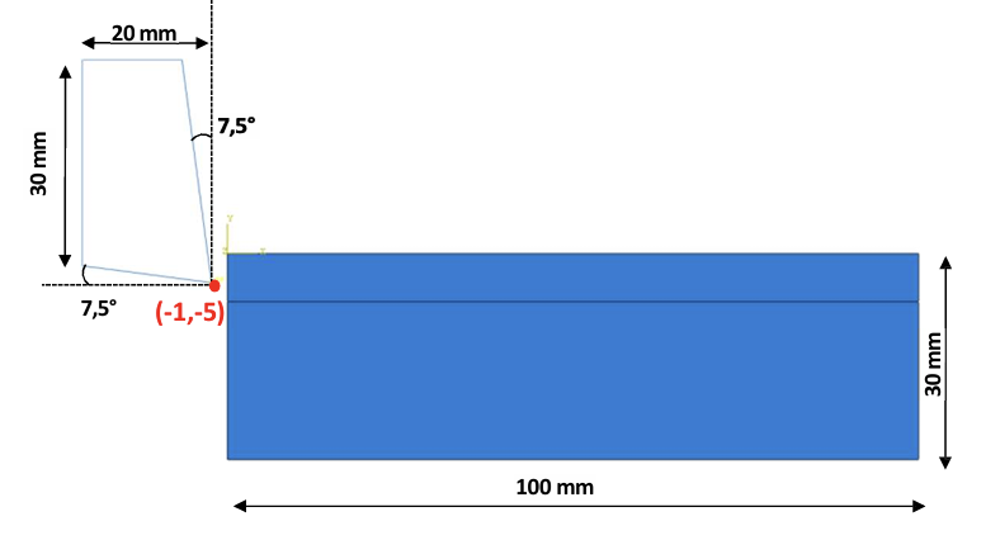

← All Academic Projects
FEA Study of a Milling Operation
Coursework: a numerical study of the milled stock during a material-removal cutting process.
Type
- Coursework
Software
- Abaqus/Explicit
Analysis
- Large-Deformation Explicit Dynamics
Numerically studied a material-removal machining process using Abaqus/Explicit, aiming to better understand the physical phenomena involved during cutting and the behavior of the workpiece material under large deformations and high strain rates. The study focused on three areas: simulating the cutting process under a large-deformation regime, modeling the contact and interaction between the tool and the workpiece, and verifying the stability of the numerical computation.
Setup
Stock: 100 × 30 mm
Tool: 20 × 30 mm, 7.5° relief angles
Objective
Large-deformation cutting simulation
Tool-workpiece contact modeling
Numerical stability verification
Abaqus/Explicit cutting simulation

Stock and tool dimensions

Mesh, refined at the cutting zone